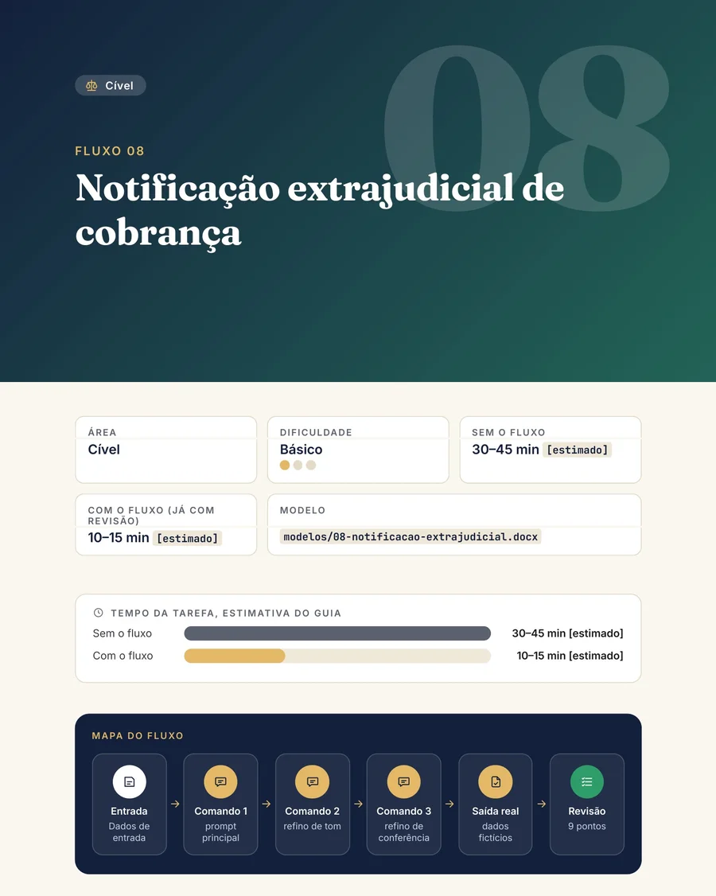

Da página em branco à primeira versão de contratos.
Você revisa, com método.
30 tarefas reais do escritório. Em cada uma, os prompts em sequência, a saída real que a IA devolveu e o checklist do que conferir antes de a peça sair da sua mesa.
Comando e resposta resumidos da execução real do fluxo 08, com dados fictícios.
A IA escreveu isto. Ache o que o cliente nunca disse.
Trecho real do fluxo 14 (narrativa dos fatos trabalhista), rodado com dados fictícios. Clique nas palavras que você cortaria.
Desde janeiro de 2024, quando o gerente assumiu, saía "por volta das 19h, quase todo dia".
Mapa de contestação
A cliente disse que um fato era verdadeiro. A IA marcou "admite com ressalva" e criou um argumento.
Pesquisa de jurisprudência
Sugeriu a Turma Nacional de Uniformização, dos Juizados Federais, para um caso de Juizado estadual.
Artigo com FAQ
Falou em prazo "razoável" de tolerância e omitiu a regra legal de até 180 dias (art. 43-A da Lei 4.591/1964).
Em mais de 10 dos 30 fluxos a saída real traz um deslize, apontado numa nota e pego pelo checklist.
A IA faz a primeira versão. Quem revisa e assina é você.
Você aprende a usar a IA para o que ela faz bem (organizar, estruturar, redigir) e a vigiar o que ela faz mal.
- 01O comando pronto, em sequência, para copiar e colar.
- 02A resposta real da IA, com o erro apontado quando houve.
- 03O checklist do que conferir antes de usar.
Prompt solto é uma frase.
Fluxo é o caminho inteiro.
Os 30 fluxos têm as mesmas 6 partes. Três das etapas do ciclo são suas: a IA nunca entrega a peça pronta.
Situação
A tarefa real e quando usar.
Dados de entrada
Campos já anonimizados.
VOCÊPrompt principal
Pronto para copiar.
NA IARefinos
Comandos curtos, em ordem.
NA IASaída real
O que a IA devolveu.
Revisão
Checklist do que costuma errar.
VOCÊUma página real.
Sem maquiagem.
É assim que abre o fluxo 08, notificação extrajudicial de cobrança. Passe o mouse para rolar a página.
- Área, dificuldade e modelo .docx de cada fluxo
- Tempo com e sem o fluxo, sempre marcado como estimativa
- Mapa das etapas: entrada, prompt, refinos, saída real, checklist
- Sigilo do fluxo: o que vira marcador antes de colar

Escolha a sua área
Contratos, cível, trabalhista (só redação), família (comunicação), escritório e marketing jurídico.
● erro apontado = a saída real desse fluxo traz um deslize que o guia mostra e o checklist pega.
Use a IA sem colar dado de cliente.
Anonimize o caso, cole só o que é seguro e reidentifique a saída no Word em 2 minutos. Baseado nas recomendações do Conselho Federal da OAB (nov/2024), no Estatuto da Advocacia e na LGPD.
Nomes e números do exemplo são inventados. A chave (marcador → dado real) fica num arquivo local, nunca na IA.
Tudo para rodar a primeira tarefa hoje
Guia em PDF · 180 páginas
Os 30 fluxos com prompts, saída real anotada e checklist próprio.
Protocolo de sigilo em 7 passos
Marcadores, o que nunca colar e o roteiro para informar o cliente do uso de IA.
14 modelos em Word
Campos em amarelo e aviso em vermelho no topo, para nada sair sem revisão.
Painel de uso em planilha
Os 30 fluxos por área, registro do seu tempo real e ficha de verificação de jurisprudência.
20 refinos jurídicos BÔNUS
Comandos para colar depois de qualquer saída: conferir invenções, ajustar o tom, achar contradição.
Cartões de mesa BÔNUS
Sigilo antes de colar, marcadores e checklist universal de 10 itens, para imprimir.
Lista de prompts × Primeira Versão
| O que você precisa | Lista de prompts | Primeira Versão |
|---|---|---|
| Comando pronto para copiar | ✓ | ✓ |
| A saída real que a IA devolveu | — | ✓ |
| O erro apontado, quando houve | — | ✓ |
| Checklist do que conferir em cada peça | — | ✓ |
| Protocolo para não expor o cliente | — | ✓ |
| Modelos em Word com campos marcados | — | ✓ |
Para quem é, e para quem não é
É para você se
- é advogado(a) autônomo(a) ou trabalha num escritório de 1 a 5 pessoas;
- já usa um assistente de IA (ou quer começar) e perde horas com peças repetitivas;
- quer a primeira versão, mas faz questão de revisar tudo antes de usar;
- se preocupa com o sigilo do cliente e com a recomendação da OAB de informar o uso de IA.
Não é para você se
- procura peça pronta sem revisão. Nada aqui é peça pronta;
- quer banco de jurisprudência. O guia ensina a montar a pesquisa nos sites oficiais;
- espera cálculo trabalhista ou previdenciário. Nos fluxos trabalhistas é só redação;
- não é da área do Direito. Não é curso de Direito.
Uma vez só. Sem mensalidade.
- Guia com 30 fluxos testadosPDF, 180 páginas
- Protocolo de sigilo7 passos + roteiro para o cliente
- 14 modelos em Wordcampos marcados
- Painel de usoplanilha com 6 abas
- Bônus: 20 refinos + cartões de mesaincluídos
Pix, cartão ou boleto
GARANTIA
Teste com um caso seu.
Leia o protocolo e rode um fluxo. Se achar que não é para o seu escritório, escreva dentro de 7 dias e devolvemos o valor pago, sem perguntas. É o seu direito de arrependimento (CDC, art. 49), e a devolução é feita pela própria plataforma de pagamento.
Uma conta honesta: no fluxo 03, o guia estima 90–120 min sem o fluxo e 40–60 min com ele, já com a sua revisão (estimativa nossa, não promessa). O painel mede com os seus números.
Antes de decidir
Preciso de uma ferramenta de IA paga?
Não. Os fluxos funcionam com qualquer assistente de IA de uso geral que aceite texto, sem extensão nem plano pago. O guia não é parceiro de nenhuma ferramenta.
A IA vai receber os dados dos meus clientes?
Só se você colar. O protocolo ensina a montar o texto fora da IA, trocar nomes e identificadores por marcadores e só então colar, e diz o que nunca colar, nem anonimizado. Não é parecer jurídico: a decisão sobre o seu escritório é sua.
E se a IA errar?
Ela erra, e o guia parte disso. Em mais de 10 dos 30 fluxos a saída real mostra um erro, a nota diz qual é e o checklist ensina a pegar. Todo texto é rascunho para a sua revisão técnica.
Posso protocolar o que a IA gerar?
Não sem revisão. Nada no guia é peça pronta. A leitura, a conferência da lei e do julgado e a assinatura são suas.
O guia traz jurisprudência?
Não como fonte. O fluxo 13 usa a IA para montar a estratégia de busca nos sites oficiais e trabalhar só sobre julgado que você conferiu, com ficha de verificação.
Serve para trabalhista e família?
Sim, com limites claros: no trabalhista é só redação, sem cálculo; em família, o foco é a comunicação com o cliente.
Como recebo o material?
Depois da confirmação do pagamento, o acesso à área de membros chega por e-mail. Lá você baixa o guia em PDF, os 14 modelos em Word, o painel (.xlsx) e o pacote completo.
Preciso entender de IA?
Não. Cada fluxo tem o prompt pronto e a explicação de cada campo. Se você sabe colar um texto numa conversa, consegue rodar.
Quem é a apresentadora dos vídeos?
Uma personagem virtual: vídeo, voz e cenas gerados com IA. Ela não é advogada nem cliente, e as conversas mostradas são resumos das execuções reais dos fluxos.
Tem relação com a OAB?
Não. É um produto independente, sem vínculo com a OAB ou qualquer instituição.
Você já tem a IA aberta numa aba.
Falta o método.
Configure a privacidade da ferramenta, cole a instrução-base e rode o seu primeiro fluxo com um caso real anonimizado, ainda hoje.
Quero o Primeira Versão por R$ 97Material de apoio profissional. Não substitui a análise, o julgamento nem a responsabilidade do(a) advogado(a). As saídas de IA são rascunho e variam por ferramenta. Os tempos são estimativas nossas.